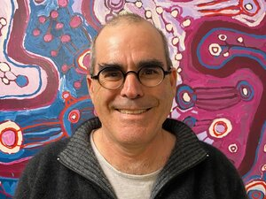
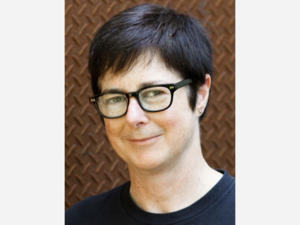

Our Team

Neil Hobbs
Neil is a landscape architect and director of Harris Hobbs Landscapes, a Canberra based landscape architectural firm that has operated for over 30 years. In their practice they integrates art into the public realm, through memorial design, commissioned works, artwork installation, and collaborating with temporary events in the art and design field.
Karina Harris
Karina is a landscape architect and director of Harris Hobbs Landscapes, a Canberra based landscape architectural firm that has operated for over 30 years. In their practice they integrates art into the public realm, through memorial design, commissioned works, artwork installation, and collaborating with temporary events in the art and design field.
George Katheklakis
George is the Managing Director of KDN Group, a local Canberra based business that specialises in Property Development, Management and Investment. With experience in the Australian property and design sector that spans over 25 years, George remains driven in the delivery of excellent design and urban environments that support and promote sustainable and integrated communities at all levels.
Jordan Evans-Tse
Jordan Evans-Tse is a multidisciplinary designer at Place Logic, a local urban design and landscape architecture firm. Born and raised in Canberra, Jordan has always felt a deep connection to this city, its rolling hills, and public open spaces and to the cultural institutions that also call Canberra home. Human-centred and sustainable design principles are key to her design practice and she is a proponent of projects that celebrate the unique characteristics of our Nation’s Capital.
Kevin Miller
Kevin Miller is a director of CCJ Architects which is an evolution of Collard Clarke Jackson, an architectural practice established in Canberra in the 1960s. CCJ has completed a number of public, community and arts related projects in Canberra and the surrounding region including (recently) the Link at Strathnairn Arts, GAD at Commonwealth Place, refurbishment of Goulburn Regional Gallery and the refurbishment of the Tuggeranong Arts Centre.
Heeseon Jung
Heeseon Jung is a Landscape technician at Harris Hobbs Landscapes (HHL) and assist the team in realising their visions in technical and visually appealing drawings. She is well-versed in industry design tools to produce concepts and detailed design documentation, as well as web / print publications for HHL and affiliated events such as contour 556.

Christine Wallace
Dr Chris Wallace is Associate Professor, 50/50 By 2030 Foundation, Faculty of Business, Government and Law, University of Canberra, where she is concerned with structural solutions for gender equity in public sector leadership and political representation. Wallace works in modern and contemporary political, international and global history with special reference to leadership, transnational lives, and transformational change and the information strategies underlying it
Paul Crawford
Paul Crawford is a projects and real estate partner with international law firm King & Wood Mallesons where he advises both private and government clients around Australia on a diverse range of real estate matters. Having moved to Canberra to attend the Australian National University he now considers himself, some 34 years later, almost a local.